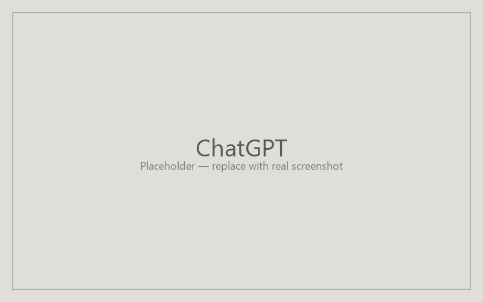

Building agents in ChatGPT
ChatGPT's custom GPTs are the most established consumer-tier agent platform. They support file grounding, configurable instructions, and shareable links that don't require the recipient to have a paid account. Builder access requires a ChatGPT Plus or Team subscription; sharing works for anyone with a free account.

Find the agent creation entry point
From chat.openai.com, click your profile in the top-right corner and choose "My GPTs," then "Create a GPT." You can also reach the builder from the side panel on the left by selecting "Explore GPTs" → "Create." The two routes land in the same configuration screen.
Fill in the creation form
Switch to the Configure tab — the Create tab is conversational and slower for paste-driven setup. Paste Title into Name, Description into Description, Instructions into Instructions. Upload files for Knowledge under "Knowledge" (PDFs, docs, slides). Toggle Capabilities (Web Search, Code Interpreter, DALL-E) as the recipe specifies; leave them off if not needed. Use the preview pane on the right to test the agent immediately.
Save and share your agent
Click Save. Pick "Anyone with the link" for general sharing or "Only me" while you're still calibrating. The published GPT lives at a chat.openai.com/g/... URL; copy that link into your syllabus or LMS. Students don't need a paid account to use a shared GPT, but they do need a free OpenAI account.
| Recipe field | ChatGPT field |
|---|---|
| Title | Name |
| Description | Description |
| Instructions | Instructions |
| Knowledge Base | Knowledge |
| Tools | Capabilities |
Last updated: pending.